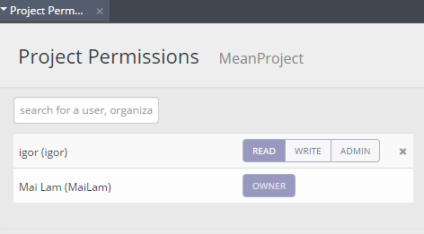

Project Permissions¶
Warning
Please note that Project Sharing via Project > Permissions feature will be disabled on or after July 8th 2024. Any existing projects shared via permission will also be removed.
When a project is created, you can choose to make it private or public. By default, the following rules apply to project permissions:
Anyone can view and copy a public project but cannot edit it.
No one but the project owner can view a private project.
To change the permissions on a project, follow these steps:
Click the Permissions tab and choose Project.

Select the permission level next to the user’s name:
Read - User can only view the project.
Write - User can edit the project.
Admin - User can access the terminal and the deployment screens. Caution should be used when assigning a user Admin permission because they have full access to keys and any other private data that might be stored on the box.
Add or remove a user¶
To add a user to a box, follow these steps:
Enter the user name in the Search text box.
Select it and click Add.
Assign the permission level to the user.
To remove a user from a box, click the X button.